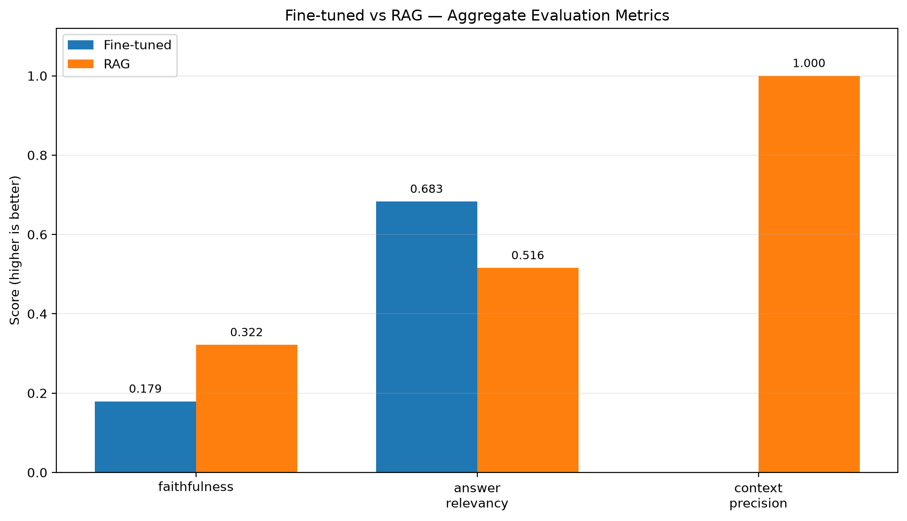
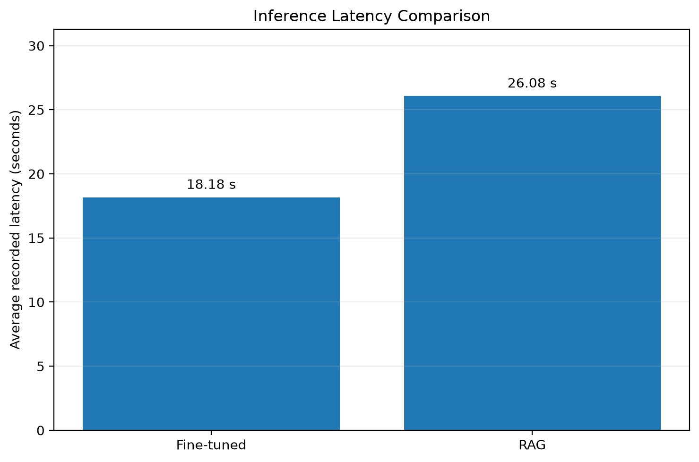

Aggregate JSON says n_samples=2, but disagreements.csv contains 1 row(s). These files may come from different runs or the CSV may contain only a subset.
Aggregate metric scores
Metric
Fine-tuned
RAG
Higher score
faithfulness
0.179
0.322
RAG
answer_relevancy
0.683
0.516
Fine-tuned
context_precision
—
1.000
RAG only
Automatic observations
For faithfulness, RAG has the higher aggregate score (fine-tuned 0.179; RAG 0.322; difference -0.142).
For answer relevancy, fine-tuned has the higher aggregate score (fine-tuned 0.683; RAG 0.516; difference +0.167).
Aggregate metric comparison

Inference latency comparison

Per-sample scores — Score (metric selected during run)
Faithfulness estimates whether answer claims are supported by the contexts supplied to the evaluator; it is not a general correctness score.
Answer relevancy estimates whether an answer addresses the question; it does not establish medical or factual correctness.
Context precision applies to retrieval and is not directly comparable to a fine-tuned answer score when the fine-tuned system does not retrieve contexts.
Latency from the CSV is based on the recorded per-row values. Confirm both systems were timed under comparable conditions.
Small sample sizes are exploratory. Do not claim one approach is generally superior from only a few examples.
Inspect the evaluation code to confirm the fine-tuned model is scored against meaningful evidence contexts. Using the reference answer as a substitute context can distort faithfulness results.